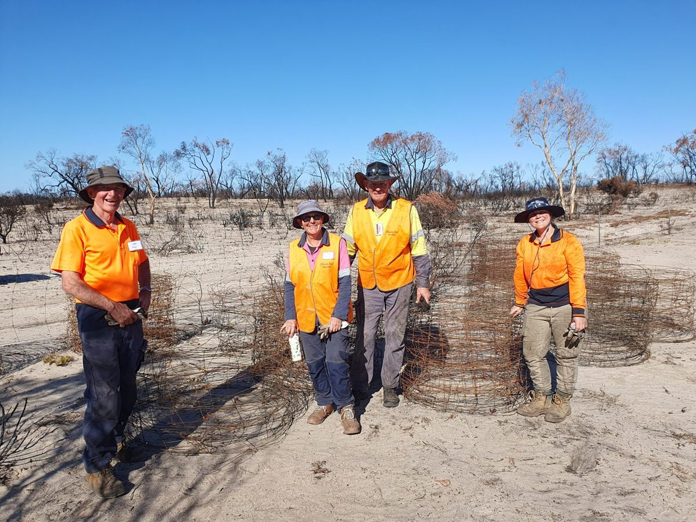

7.1
Who can help
Very little of this is best done alone, and most of it is cheaper and easier with help.
- Your local Landcare group or network. The first call. They run surveys you can join, often hold shared equipment such as thermal scopes, and know your district’s weeds and who else is working on them.
- Your Catchment Management Authority. Can pull your property’s fire history and mapping (1.3), and administers much of the funding.
- DEECA for vegetation, fire ecology and threatened species questions; Agriculture Victoria for weed and pest declarations, control methods and legal obligations (4.4).
- Trust for Nature for conservation covenants and, in this project, habitat pods.
- Your local Men’s Shed for nest boxes. This worked well here and is worth asking about.
- Local ecologists and birders. An expert survey once or twice a year complements anything automated (3.7), and local birders will verify uncertain records.
Needed
The actual names, phone numbers and links to publish here, and confirmation from each organisation that they are happy to be listed.
Further reading
- Trust for Nature, Helping the bush recover from fire — vegetation divisions, fire intervals and recovery stages in more detail than Part 1 goes into, plus the case for covenanting.
- Cheal (2010), Growth stages and tolerable fire intervals for Victoria’s native vegetation data sets — the source of the interval and growth-stage tables in Part 1, including the key fire-response species behind them.
- VicFlora — the reference for identifying Victorian plants; its Interplay of Victoria’s flora with fire page sets out how species respond, by group.
- Post-fire Weeds Triage Manual (Arthur Rylah Institute) — the Victorian reference on deciding which weeds to tackle first after fire. The longer version of 4.3.
- Australian Association of Bush Regenerators — post-fire resources — technique guides by weed type, including weeds with underground bulbs, corms and tubers, and a video series on telling native seedlings from weed seedlings.
- Project Platypus nest box resources — designs, dimensions and installation guides. The detail behind 4.7.
- Wimmera weed and pest priorities — the regional priority lists behind 4.2.
- Pyrenees Firewise Garden Guide — the companion to this guide for the garden and defendable space around the house.
- Victorian Landcare Gateway — fire recovery — fencing, stock, pasture, soils and water: the agricultural side we don’t cover.
